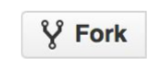

git clone
es el comando que se usa para clonar un repo remoto git clone url del repo esto trae el repo con el nombre original. También se le puede cambiar el nombre con el siguiente comando git clone urlProyecot nuevoAslias
el comando git branch -r muestra las branchs dentro del repo clonado
fork
el fork se usa cuando queremos contribuir a un proyecto al cual no tenemos permiso de pushear o editar, entonces lo que pasa es que al darle fork el proyecto se copia el proyecto en nuestro usuario de github o cualquier otro cliente de git, en otras palabras se crea una rama exacta del proyecto principal y asi podemos manipularla a nuestro antojo.
y cuando estamos seguros de subir los cambios hechos al proyecto principal o la rama 'main' le damos el comando 'pull request', que es el que le avisa al admin del proyecto en cuestion que hay alguien que quiere subir los cambios que hizo y 'mergearlo' con el proyecto.
y el admin decide si se aprueba o no dichos cambios hechos por otros usuarios.
En cambio al clonar un repositorio cualquiera lo que hacemos es bajarlo a nuestro equipo local y no hay manera de hacer un pull request porque eso es para cuando un repo ha sido 'forkiado'.
- ir a la pagina del proyecto original
-
click en el botón fork
- 
- nos va a redirigir a nuestro perfil con el nuevo proyecto
flujo de desarrollo colaborativo
- fork del proyecto.
- Creamos un branch nuevo desde el branch master.
- Hacemos algunos commits para mejorar el proyect.
- Hacemos un push de nuestro branch a nuestro proyecto de GitHub.
- Abrimos un Pull Request en GitHub.
- Generamos una discusión al respecto de nuestro trabajo realizado yalternativamente seguimos haciendo más commits.
- Sincronizamos el branch master nuevamente a nuestro Fork.
fetch
el fetch sirve para traer los commits que otros desarrolladores hayan hecho en el repo remoto. git fetch alias/nombre del repo este comando solo descarga lo que los demas hicieron pero no te junta con lo que llevas hecho, eso se hace manualmente.
pull
el pull es para descargar los nuevos cambios que no tenemos en el repositorio local al igual que el fetch pero ademas de descargarlo integra automaticamente lo que tenemos con el repo remoto.
pull request
este comando es para hacer un pedido de push al dueño o administrador del proyecto... para hacerlo el cliente de github va a darnos la opcion de escribir en detalle los cambios que hemos hecho, luego le damos al boton verde de 'pull request'al hacerlo el owner ve los detalles del request y decide y si decide nos va a llegar una notificacion a nuestro perfil de github.
flujo de trabajo / ramas
es la manera de trabajo remoto actual, se clona el repositorio remoto a la maquina local.
comandos
- git branch
- muestra las ramas que tengo localmente.
- git branch -r
- muestra las ramas que tengo en el repo remoto.
- git checkout/ git checkout nombre repo/nombre rama
- es para ver en que rama estamos parados y poder movernos a la rama que queramos. si me muevo entre ramas y tengo cambios que no estan comiteados ni en stage git me los trae a donde me mueva..antes de movernos hacer el commit, para que no se vaya con nosotros a las ramas que nos movamos.
- git merge repo/rama
- cuando queremos subir los cambios de nuestra rama a la rama main, hacemos un merge. para hacerlo hay que estar parado en la rama a la que queremos mergear, por ejemplo, main. si hay un cambio en el main, que suele suceder es que tire una bifurcacion y si no hay porblemas aparece el "fast-forward" que significa que fue mergeado con exito. lo ideal es no hacer directamente el merge, aunque trabajemos solos, lo mejor es hacer un pull request completo con detalles para que podamos analizar mejor los cambios antes de subirlo a produccion.
- git fetch
- trae las nuevas referencias nuevas del repo remoto al local.
- git pull
- trae todos los cambios que se hicieron en el repo remoto.
- git push
- te sube todo lo que tengo en mi rama para subir, usar cuidadosamente.
- git branch -d nombrerama
- eliminar una rama
- git branch nombre de la rama
- crea una nueva rama.